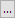

Origin 2023から、ボックスチャートにボックススケールオブジェクトを追加出来ます。
ボックスチャートでは、以下の方法のいずれかでボックススケールを追加できます。
このダイアログでボックススケールの編集が可能です。
ボックススケールの制御ダイアログボックスを開くには：
または、
ボックススケールでは、ボックス範囲, ヒゲ, 中央値がデフォルトで表示されています。 そして、他のシンボルの表示は作図の詳細ダイアログで選択されているかどうかに依存します。
これらの要素のラベルを表示するかどうかは、このダイアログで制御できます。作図の詳細ダイアログでシンボルが選択されていない場合、ボックス範囲、ヒゲ、中央値を除き、ラベル オプションもこのダイアログに表示されません。
| ボックス範囲 | ボックス範囲のラベルを表示および編集します。
ボタンをクリックし、ボックス範囲ラベルダイアログを表示させます。このダイアログには、編集ボックスで選択したすべてのボックス範囲が一覧表示されます。ボックス範囲は、作図の詳細ダイアログのボックスチャートタブで制御されます。 例: ボックス範囲がSEに設定されている場合、ラベルはSE編集ボックス内のテキストを表示します。 リセットボタンは、ラベルをデフォルト設定に戻すときに使います。 |
|---|---|
| ヒゲ | ボックスのヒゲのラベルを表示および編集します。
ボタンをクリックし、ヒゲラベルダイアログを表示させます。このダイアログには、編集ボックスで選択したすべてのヒゲが一覧表示されます。ヒゲは、作図の詳細ダイアログのボックスチャートタブで制御されます。 例: ヒゲが定数に設定されている場合、ラベルは定数編集ボックス内のテキストを表示します。 リセットボタンは、ラベルをデフォルト設定に戻すときに使います。 |
| 中央値 | ボックスの中央値シンボルのラベルを表示および編集します。
中央値シンボルは、作図の詳細ダイアログのパーセンタイルタブで制御されます。 |
| 平均 | ボックスの平均シンボルのラベルを表示および編集します。
平均シンボルは、作図の詳細ダイアログのパーセンタイルタブで制御されます。 |
| 外れ値 | ボックスの外れ値のラベルを表示および編集します。
外れ値は、作図の詳細ダイアログの外れ値タブで制御されます。 |
| 極端値 | ボックスの極端値のラベルを表示および編集します。
極端値は、作図の詳細ダイアログの外れ値タブで制御されます。 |
| 1% / 99% / 最大 / 最小 | ボックスの 1% / 99% / 最大 / 最小 のラベルを表示および編集します。
これらのシンボルは、作図の詳細ダイアログのパーセンタイルタブで制御されます。 |
| ボックス高さ
（レイヤの%） |
ボックススケールの高さを制御します。この値はレイヤの％です。外れ値や極端値は含みません。
Note: ボックススケールの重みは、プロット内のボックスの重みに従います。これは、作図の詳細ダイアログのボックスチャートタブで編集されます。 |
|---|---|
| ラベルオフセット
（フォントの%） |
ラベルとシンボルの間隔の値を指定します。この値は、フォントの高さに対するパーセントです。 |
| 黒の境界線と塗りつぶしなし | ボックスのスタイルに関係なくボックスのスタイルを、塗りつぶしなしの黒い縁にセットします。
チェックがない場合、ボックススケールのスタイルはプロットの最初のボックスに従います。 |
| 線上のラベル | すべてのラベルを 1列に並べ、左揃えにします。 |
| フォント | ラベルのフォントを変更します。
|
| ラベル回転 | ボックススケールのラベルを回転できます。
<自動> は、水平レイアウトの場合は 0、垂直レイアウトの場合は 270 を意味します。 |
| レイアウト | ボックススケールのレイアウトを水平もしくは垂直に設定します。
自動はプロットに従います。レイヤのx・yを入れ替えた場合、ボックスはグラフで水平に表示され、オブジェクトは水平レイアウトを使用します |